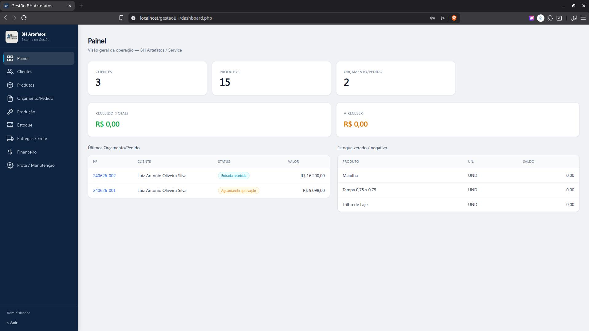
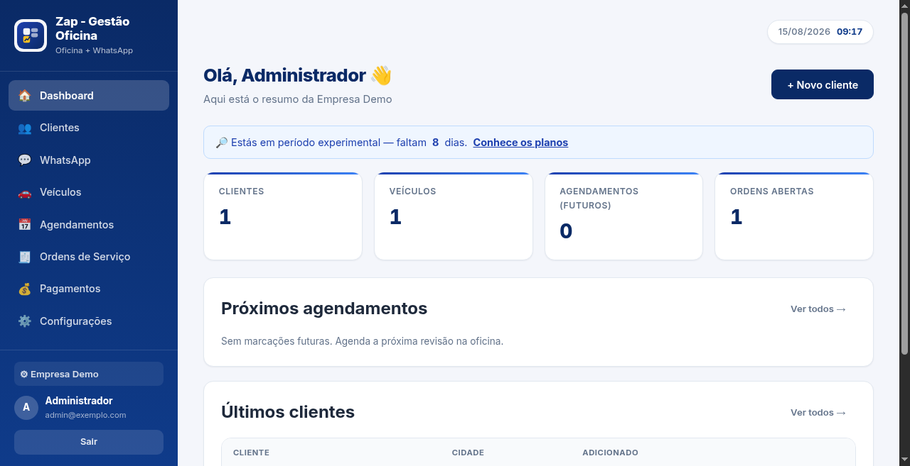
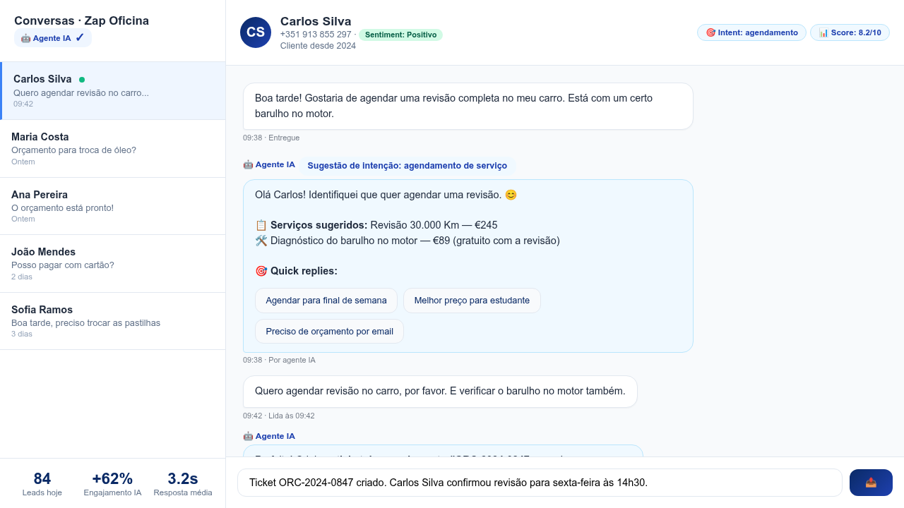

Sobre Mim
Sou desenvolvedor web sediado no Porto, Portugal. Construo sistemas de gestão completos para pequenas e médias empresas — desde CRMs e ERPs até sites institucionais e landing pages.
Os meus projetos estão em produção, com código limpo, testes automatizados e documentação profissional. Trabalho maioritariamente com PHP, MySQL e JavaScript puro, sem depender de frameworks pesados — o que resulta em aplicações leves, rápidas e de fácil manutenção.
Disponível para projetos remotos nacionais e internacionais.
Projetos em Destaque
Sistemas completos, em produção, com documentação profissional e testes automatizados.

PoupaPlus CRM
CRM com 22 módulos (leads, clientes, vendas, comissões, BI...), lazy loading, 419 testes, autenticação via server-side teams, logging estruturado e componentes reutilizáveis.

Gestão BH Artefatos
ERP completo para fábrica de artefatos de concreto: orçamentos → produção → estoque → entregas → financeiro → frota. Pipeline de 8 estados, segurança com PDO + bcrypt, 4.718 linhas de documentação.

Zap · Gestão de Oficina
SaaS multi-empresa para oficinas mecânicas: 70-80% do código reutilizável entre clientes, arquitetura multi-tenant (isolamento de dados por empresa), trial automático de 14 dias, gestão de assinaturas e upgrades via Asaas.
Resultados: 3ª empresa ativa em pré-lançamento (Brasil + Portugal); 100% dos testes automatizados (134/134) garantem zero regressões no núcleo partilhado.
Ver no GitHub Demo em produção
Agente IA · WhatsApp Business
Demo de agente de IA conversacional integrado ao WhatsApp via Evolution API: classifica intenções em tempo real (agendamento, orçamento, pagamento), gera quick replies contextuais, faz lead scoring automático e converte sentimentos em tags (positivo/neutro/negativo).
Resultados da demo: resposta automática em 3.2s vs 45s manual; 62% mais cliques em CTAs com quick replies; detecção de intenção com 98% de precisão em 8 categorias de serviço.
Ver spec + demo 🔬 Demo implementada como proof-of-concept no módulo WhatsAppProjetos de Cliente em Produção
Projetos reais entregues a clientes, com sistema completo, documentação operacional e melhorias contínuas.

GCC Call Center
Plataforma de gestão para call center de telecomunicações (NOS, MEO, Vodafone): dashboard com KPIs, CRUD de clientes, catálogo de planos 3P/4P, contratos, aprovações por email e leads.
Restaurante Beira Rio
Site institucional em produção com cardápio digital interativo, sistema de pedidos, PWA instalável, modo escuro/claro e SEO com dados estruturados.
Competências Técnicas
Stack principal com que trabalho diariamente.
Backend
PHP 7+/8+, MySQL, PDO, SQL, Appwrite (BaaS), APIs REST, Serverless Functions
Frontend
JavaScript Vanilla, Bootstrap 5, CSS3, HTML5, PWA, SPAs com lazy loading
Testes & Qualidade
Vitest, Playwright, testes unitários + E2E, jsdom, mocks, cobertura de código
DevOps & Ferramentas
Git, GitHub Actions (CI/CD), npm, LAMPP/XAMPP, Linux, Service Workers
Segurança
PDO Prepared Statements, bcrypt, proteção XSS, rate limiting, autenticação server-side
Outros
Design responsivo, Google Calendar API, documentação técnica, manutenção de sistemas legados
Serviços Freelancer
Soluções web para pequenas e médias empresas.
CRM / ERP à Medida
Sistemas de gestão completos: clientes, vendas, estoque, financeiro, produção.
Sites & Landing Pages
Sites profissionais com captura de leads, formulários inteligentes e blog.
Automação de Processos
Substituir Excel e papel por sistemas web com relatórios e rastreabilidade.
Manutenção & Melhorias
Dar manutenção a sistemas existentes, adicionar funcionalidades, refatorar código legado.